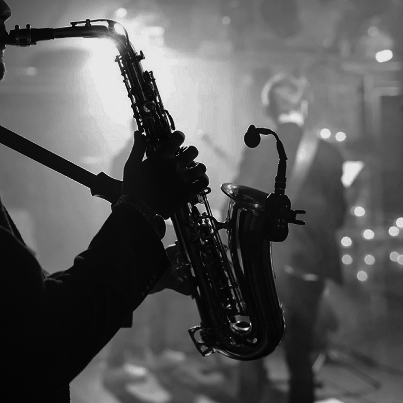
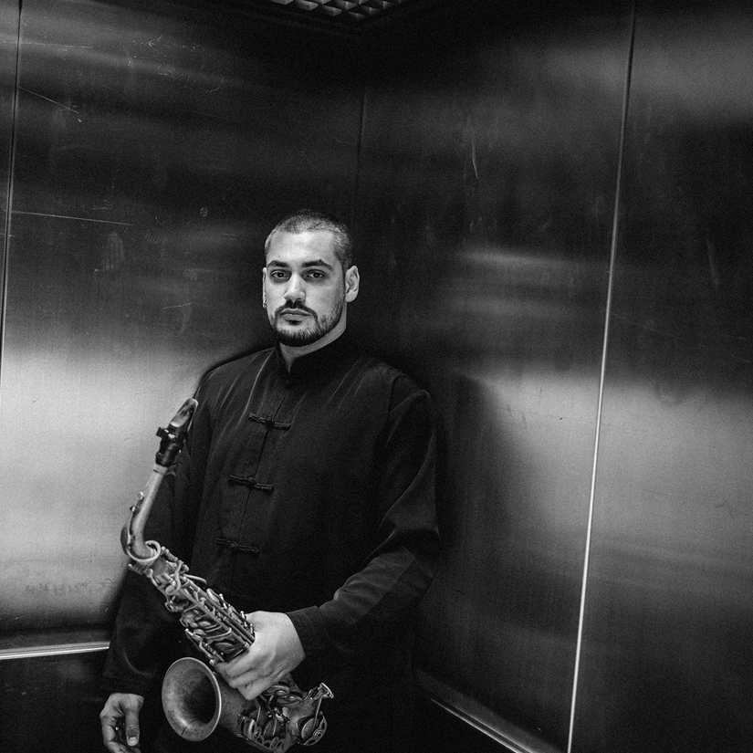
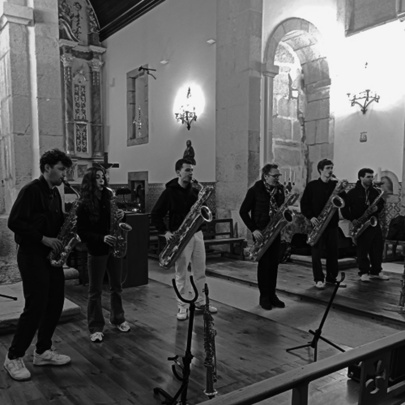

Eventos

Santa casa jazz fest
22-25 maio
Gratuito
O Santa Casa Jazz Fest é uma parceria inédita entre a Santa Casa da Misericórdia de Lisboa e
o histórico clube de jazz Hot Clube de Portugal. A edição de 2025 realiza-se entre 22 e 25
de maio em dois espaços do Convento de São Pedro de Alcântara (Jardim do Abacateiro e
Igreja) e na Quinta Alegre. O evento inclui uma grande variedade de concertos de jazz, com
grupos e artistas emergentes, bem como apresentações da Escola de Jazz Luiz Villas-Boas.
ler mais
JAZZ EM AGOSTO
3 agosto
Gulbenkian
Nesta estrondosa exploração de Jones em trio acompanhado por Gerald Cleaver e Chris Lightcap
, com cinco novos temas e um arranjo de No More My Lord, (canção prisional registada por
Alan Lomax, responsável pela mais completa recolha da música popular norte-americana), o
saxofonista aborda a saúde mental da população negra e a superação de um trauma coletivo
através de terapia, do apoio comunitário e da expressão artística.
ler mais

RICARDO TOSCANO TRIO
12 Outubro
CULTURGEST
Apresentamos a sua mais recente obra, Chasing Contradictions, o primeiro disco gravado em
trio e recetáculo de inúmeros prémios e elogios no final do ano de 2022. Ao prescindir do
piano e, por conseguinte, do quarteto, Toscano criou espaços subtis onde se sentem outras
comunicações entre os músicos. Chasing Contradictions é, por agora, o mais espantoso
testemunho da espetacular valia de Ricardo Toscano e dos seus parceiros de muitos anos no do
jazz.
ler mais

SAXSUMMIT 2025
5-9 MARÇO
Em Família
Decorre, de 5 a 9 de março, a primeira edição do Saxsummit, um evento onde a música e o
saxofone são o elemento central. Organizado por Henk van Twillert e Tiago Costa, em
colaboração com Guilherme Bogas e Fernanda Alves, o Saxsummit pretende proporcionar uma
experiência educativa e cultural enriquecedora para estudantes de saxofone e para o público
em geral.
ler mais